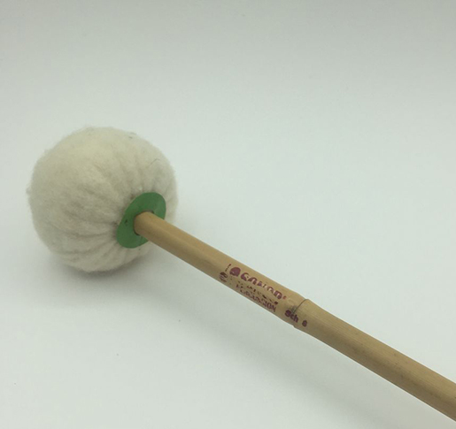
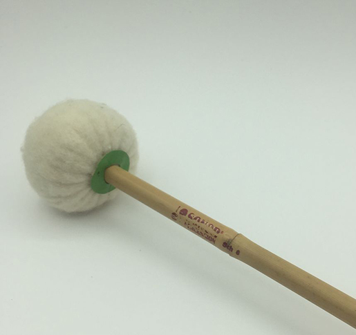

Walkfilz
Textilgewebe
Walkfilz ist eine Textilie aus einem Vlies aus Schafwolle oder anderem Tierhaar, die durch Zugabe von Seifenwasser und Wärme mechanisch verfestigt wird.
Tierhaar
Schafswolle
Beim Walkfilz können nur tierische schuppige Haare verwendet werden.

Walkfilz
Durch die Wärme und Seife verzahnen sich die schuppigen Haaren.

warmes Wasser
Walkfilz
Die Tierhaare zu einem Vlies gekämmt und durch die Walzen an das Wasserbecken geführt. Durch die Reibung und das warme Seifenwasser verhaken sich die Haare.

Eigenschaften
Walkfilz
❚ elastisch und formbeständig
❚ luftdurchlässig
❚ UV-beständig
❚ wärme-, kälte- und schallisolierend
Anwendungen
Walkfilz
❚ Hüte, Hausschuhe, Stiefel, Janker...
❚ Polierfilz
❚ Filter, Dichtung
❚ Kunstgewerbe
weiterlesen
 
